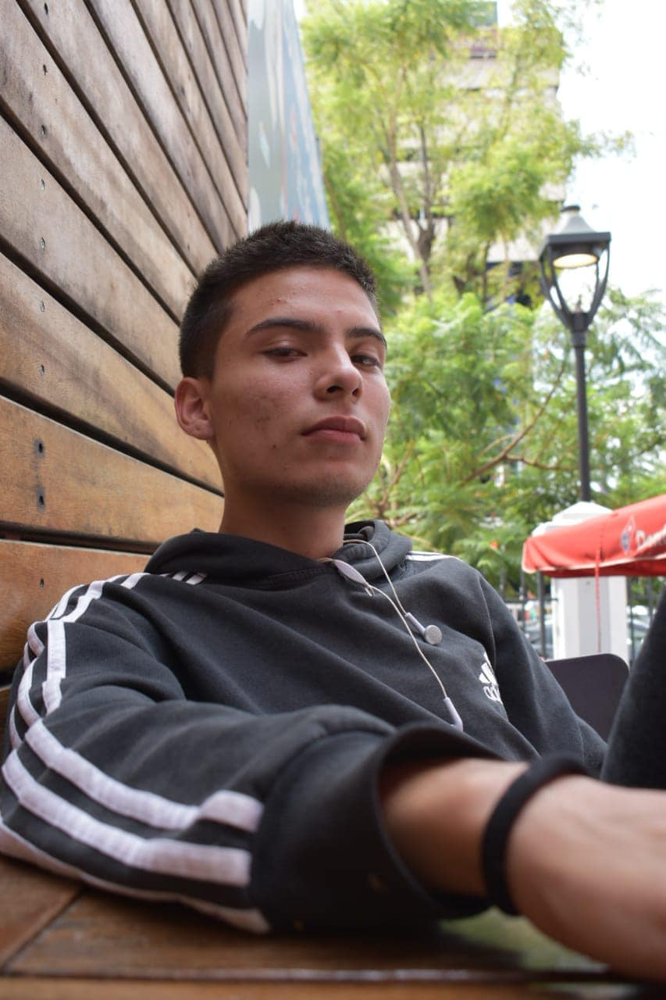

:root{
    --color-primario: #000000;
}
<!DOCTYPE html>
<html lang="en">
<head>
    <meta charset="UTF-8">
    <meta http-equiv="X-UA-Compatible" content="IE=edge">
    <meta name="viewport" content="width=device-width, initial-scale=1.0">
    <link rel="preconnect" href="https://fonts.googleapis.com">
    <link rel="preconnect" href="https://fonts.gstatic.com" crossorigin>
    <link href="https://fonts.googleapis.com/css2?family=Roboto:wght@100&display=swap" rel="stylesheet">  
    <title>Victor Vega</title>
</head>
<body>
    <style>
       #principal{
           border: solid 1px var(--color-primario);
           width: 60%;
           margin: 0 auto;
           padding: 5px;
       }

       fieldset{
           margin-bottom: 10px;
       }
       
       legend{
           border: solid 1px violet;
           padding: 5px;
           font-weight: bold;
           border-radius: 20px;
           background-color: lightgreen;
       }
       #mifoto{
           margin: 5px;
           border: solid 4px black;
       }
       body{
           background: url(fondo.jpeg);
       }
       h1{
           color: #000000;
           text-decoration: underline;
           text-shadow: 2px 2px 1px black;
           font-style: italic;
           font-weight: normal;
           font-size: 4em;
           font-variant: small-caps;
           font-family: 'Roboto', sans-serif;
           text-align: center;
       }
    </style>
<div id="principal">
     <h1>Victor Adrian Vega Ruvalcaba</h1>
    <p>Privada 5 de mayo #5, Balcones del Salto, El Salto</p>
    <p>Telefono: 3325565635</p>
    <fieldset>
        <legend>Datos Generales</legend>
        <ul>
            <li>Fecha de nacimiento: 18/09/01</li>
            <li>CURP: VERV090801HJGCVNCA1</li>
            <li>Email: victor.vega6377@alumnos.udg.mx</li>
        </ul>
    </fieldset>

    <fieldset>
        <legend>Estudios previos</legend>
        <ul>
             <font color="#fa0fa0">Primaria Rene Nucamendi Sanchez</font>
            <li><font size="4">Secundaria Mixta Foranea #10</font></li>
            <li>Preparatoria Regional del Salto</li>
        </ul>
    </fieldset>

    <fieldset>
        <legend>Idiomas dominados</legend>
        <ul>
            <li>Español</li>
            <li>Inglés</li>
        </ul>
    </fieldset>
    
    <fieldset>
        <legend>Habilidades</legend>
        <ul>
            <li>Programación en python 70%</li>
            <li>Programación en HTML 10%</li>
            <li>Masterización de musica 80%</li>
        </ul>
    </fieldset>
    <fieldset>
        <legend>Experiencia laboral</legend>
        <ul>
            <li>Representante en Mercado libre, sede de Guadalajara</li>
        </ul>
    </fieldset>
    
    <fieldset>
        <legend>Intereses profesionales</legend>
        <ul>
            <li>Ascender desde un puesto Jr, hacia un puesto mas alto</li>
        </ul>
    </fieldset>

    <fieldset>
        <legend>Softwares y porcentajes de conocimientos</legend>
        <ul>
            <li>Gimp 90%</li>
            <li>Abletone 60%</li>
        </ul>
    </fieldset>

    <fieldset>
        <legend>Referencias personales</legend>
        <ul>
            <lib>Beatriz Adriana Ruvalcaba Mercado, Telefono: 3311254859</lib>
            <lib>Evelyn Samantha Indalecio Rodriguez, Telefono 3324589658</lib>
        </ul>
    </fieldset>

</body>
</html>